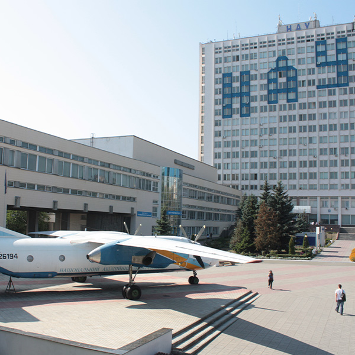
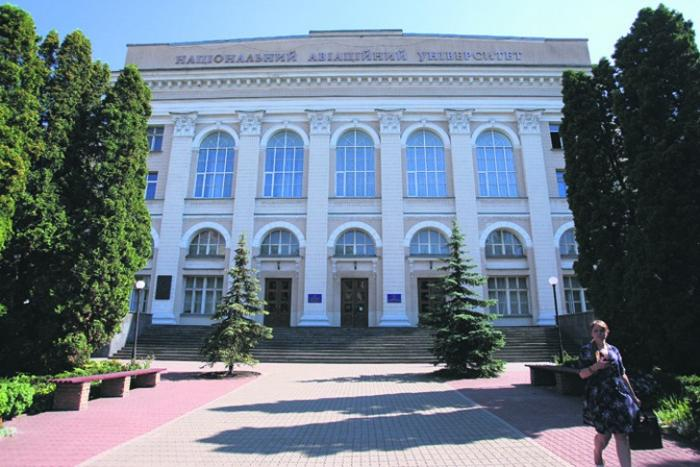

НАЦІОНАЛЬНИЙ АВІАЦІЙНИЙ УНІВЕРСИТЕТ
Національний авіаційний університет — авіаційний заклад вищої освіти в Києві. В університеті навчається 16,6 тисяч студентів із 55 країн світу. Науково-педагогічні школи дають можливість готувати не лише фахівців інженерного профілю, але й економістів, юристів, екологів, перекладачів, психологів, соціологів тощо. Навчальний процес забезпечує науково-педагогічний колектив, у складі якого 15 академіків та членів-кореспондентів НАН України, 184 докторів наук, професорів та 677 кандидатів наук, доцентів. До навчального процесу залучаються спеціалісти авіакомпаній та промислових підприємств. Серед викладачів — 80 лауреатів Державної премії та Заслужених діячів науки та техніки.
ГОЛОВНИЙ КОРПУС:
